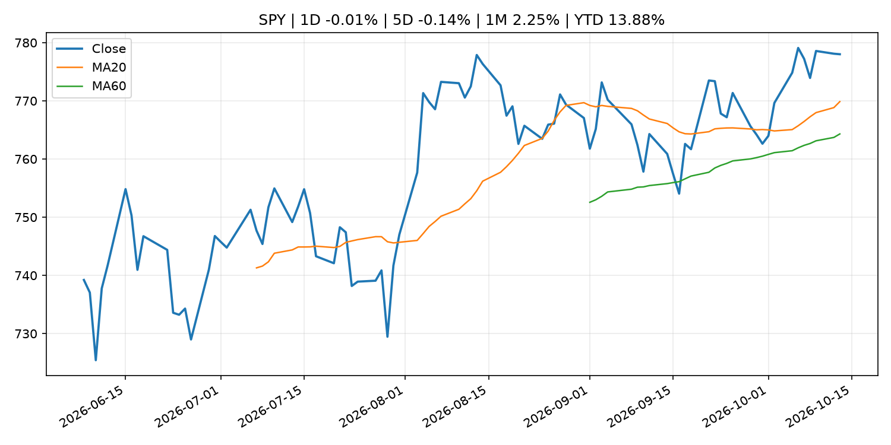
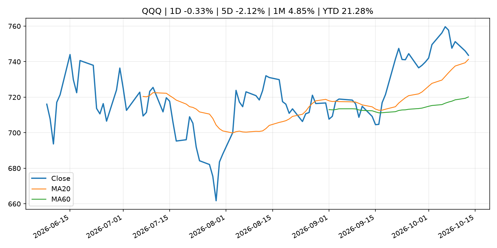
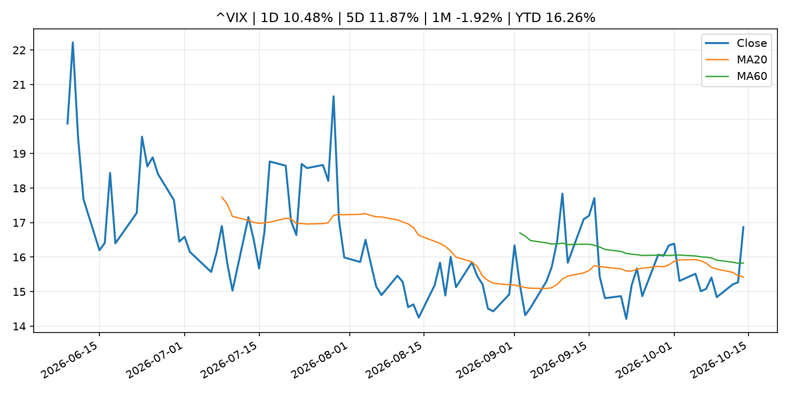
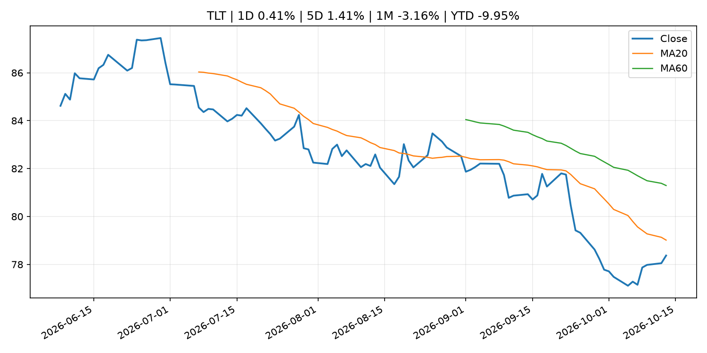
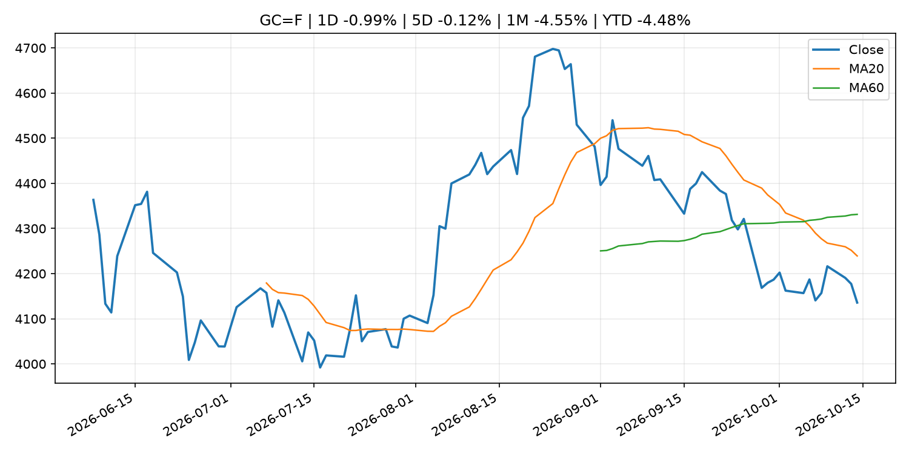
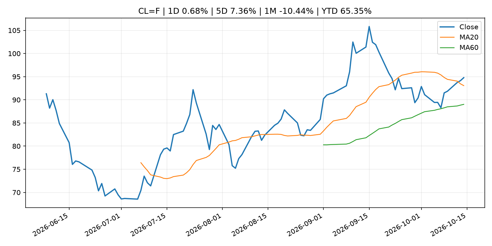
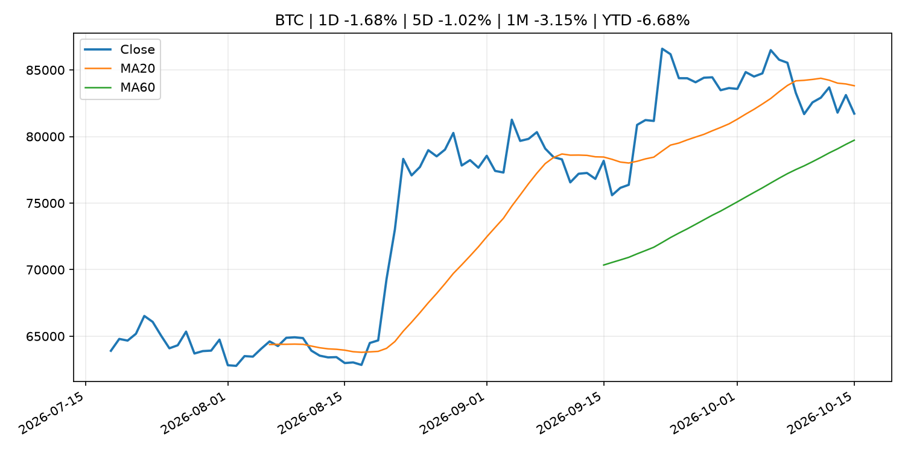
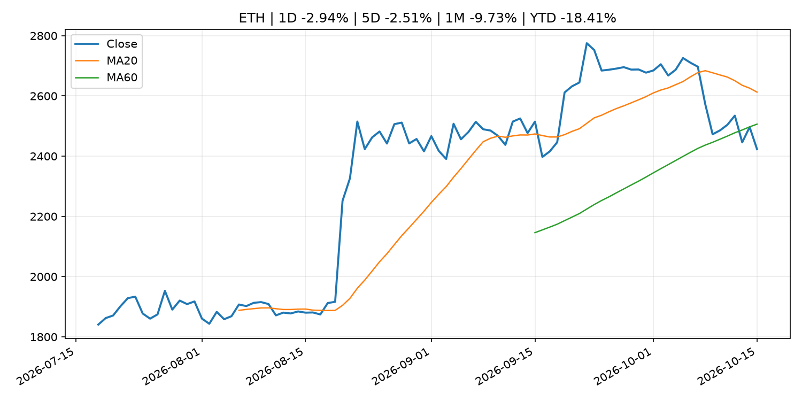
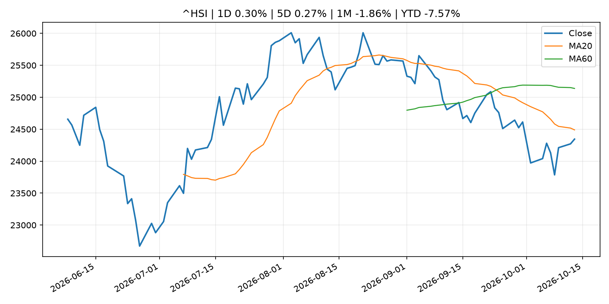

Global Macro Morning Briefing - 2026-10-15
Not financial advice / 非投资建议。
0. 今日总览
- 市场状态：unknown。市场信号不足，暂不判断明确状态。
- 今日三大主线：
- macro_data: U.S. September CPI comes in hot, sending bitcoin sharply lower
- central_bank_decision: Williams says Fed may not have to hike rates in 2027, at odds with traders
- fiscal_policy: Proposed 31.4% French tax on regulated stablecoins could drive crypto traders offshore
- 一句话结论：今日晨报重点关注：这类宏观数据会直接改变市场对通胀、增长和政策路径的预期。；央行决策会重定价利率、汇率、久期资产和风险资产。。跨资产方面，SPY 1D -0.01%；QQQ 1D -0.33%；^VIX 1D 10.48%；TLT 1D 0.41%；GC=F 1D -0.99%；CL=F 1D 0.68%；BTC 1D -1.68%；ETH 1D -2.94%；市场信号不足，暂不判断明确状态。政策、通胀、利率、美元、美债、能源和加密监管仍是主要观察线索。所有结论仅基于公开数据与短摘要整理，不构成投资建议。
1. 隔夜跨资产市场
- 美股：SPY 1D -0.01%，QQQ 1D -0.33%，整体趋势需结合 VIX 和利率确认。
- 美债/美元：TLT 1D 0.41%，美元指数 1D 0.09%，是判断折现率压力的核心线索。
- 黄金/原油：黄金 1D -0.99%，原油 1D 0.68%，用于观察避险、通胀和地缘风险。
- 加密：BTC 1D -1.68%，ETH 1D -2.94%，关注是否独立于纳指走出加密自身行情。
- 港股/A股：恒生 1D 0.30%，沪深300/上证 1D n/a，重点看中国政策预期与人民币线索。
- 风险观察：关注后续数据是否确认当前跨资产信号。
US_EQUITY
| symbol | latest close | 1D | 5D | 1M | YTD | trend |
|---|---|---|---|---|---|---|
| SPY | 778.01 | -0.01% | -0.14% | 2.25% | 13.88% | uptrend |
| QQQ | 743.57 | -0.33% | -2.12% | 4.85% | 21.28% | uptrend |
| DIA | 516.21 | -0.33% | 0.32% | -1.58% | 6.74% | range_bound |
| IWM | 276.70 | -0.43% | -1.65% | -3.89% | 11.22% | strong_downtrend |
| VTI | 381.32 | -0.07% | -0.32% | 1.77% | 13.38% | uptrend |
US_MACRO_MARKET
| symbol | latest close | 1D | 5D | 1M | YTD | trend |
|---|---|---|---|---|---|---|
| ^VIX | 16.87 | 10.48% | 11.87% | -1.92% | 16.26% | range_bound |
| DX-Y.NYB | 102.27 | 0.09% | 0.03% | 2.63% | 3.91% | uptrend |
| TLT | 78.37 | 0.41% | 1.41% | -3.16% | -9.95% | strong_downtrend |
| IEF | 89.54 | 0.12% | 0.46% | -1.53% | -6.81% | downtrend |
COMMODITIES
| symbol | latest close | 1D | 5D | 1M | YTD | trend |
|---|---|---|---|---|---|---|
| GC=F | 4,135.80 | -0.99% | -0.12% | -4.55% | -4.48% | strong_downtrend |
| SI=F | 55.88 | -5.55% | -6.72% | -11.64% | -20.81% | strong_downtrend |
| CL=F | 94.78 | 0.68% | 7.36% | -10.44% | 65.35% | uptrend |
| BZ=F | 105.61 | -0.08% | 5.40% | -2.89% | 73.84% | uptrend |
| NG=F | 3.29 | 0.09% | 2.59% | 12.57% | -9.18% | uptrend |
| HG=F | 6.62 | -0.87% | 0.36% | 3.95% | 17.38% | uptrend |
HK_MARKET
| symbol | latest close | 1D | 5D | 1M | YTD | trend |
|---|---|---|---|---|---|---|
| ^HSI | 24,345.22 | 0.30% | 0.27% | -1.86% | -7.57% | downtrend |
| 0700.HK | 423.40 | -0.42% | 0.67% | -1.67% | -32.04% | downtrend |
| 9988.HK | 110.50 | 3.08% | 4.84% | 4.34% | -25.84% | range_bound |
| 3690.HK | 77.10 | 6.64% | 9.91% | 2.73% | -26.29% | range_bound |
| 1810.HK | 26.38 | 5.35% | 10.19% | -2.87% | -34.51% | range_bound |
| 1211.HK | 72.85 | -0.55% | -2.28% | -9.16% | -26.23% | strong_downtrend |
CRYPTO
| symbol | latest close | 1D | 5D | 1M | YTD | trend |
|---|---|---|---|---|---|---|
| BTC | 81,721.26 | -1.68% | -1.02% | -3.15% | -6.68% | range_bound |
| ETH | 2,423.29 | -2.94% | -2.51% | -9.73% | -18.41% | range_bound |
| SOLANA | 104.33 | -2.27% | -4.35% | -9.27% | -16.22% | range_bound |
| BINANCECOIN | 729.88 | -1.53% | -1.60% | -4.87% | -15.39% | range_bound |
| RIPPLE | 1.33 | -2.41% | -4.48% | -11.25% | -27.62% | range_bound |
2. 今日最重要的 10 条新闻
1. U.S. September CPI comes in hot, sending bitcoin sharply lower
- 来源：CoinDesk
- 时间：2026-10-14T12:33:56+00:00
- 地区：global
- 事件类型：macro_data
- 重要性层级：Tier 1
- 一句话摘要：U.S. September CPI comes in hot, sending bitcoin sharply lower
- 为什么重要：这类宏观数据会直接改变市场对通胀、增长和政策路径的预期。
- 可能影响：主要影响 DXY，方向为 positive，强度 high；通胀压力可能推高政策利率预期并支撑美元。
- 资产：DXY 方向：positive 强度：high 原因：通胀压力可能推高政策利率预期并支撑美元。
- 资产：TLT 方向：negative 强度：high 原因：通胀上行通常推升收益率、压低长债价格。
- 资产：QQQ 方向：negative 强度：high 原因：更高利率对成长股估值折现率不利。
- 资产：SPY 方向：mixed 强度：medium 原因：名义增长可能支撑收入，但更高利率压制估值。
- 资产：GC=F 方向：mixed 强度：medium 原因：通胀对黄金是支撑，但实际利率上行会形成压力。
- 资产：BTC 方向：mixed 强度：medium 原因：抗通胀叙事和流动性收紧可能相互抵消。
- 原文链接：https://www.coindesk.com/markets/2026/10/14/u-s-september-cpi-comes-in-hot-sending-bitcoin-sharply-lower
2. Williams says Fed may not have to hike rates in 2027, at odds with traders
- 来源：CNBC Economy
- 时间：2026-10-13T19:46:12+00:00
- 地区：US
- 事件类型：central_bank_decision
- 重要性层级：Tier 1
- 一句话摘要：New York Fed President John Williams sees one more rate hike in 2026 but no additional increase in 2027 as inflation pressures ease.
- 为什么重要：央行决策会重定价利率、汇率、久期资产和风险资产。
- 可能影响：主要影响 DXY，方向为 positive，强度 high；通胀压力可能推高政策利率预期并支撑美元。
- 资产：DXY 方向：positive 强度：high 原因：通胀压力可能推高政策利率预期并支撑美元。
- 资产：TLT 方向：negative 强度：high 原因：通胀上行通常推升收益率、压低长债价格。
- 资产：QQQ 方向：negative 强度：high 原因：更高利率对成长股估值折现率不利。
- 资产：SPY 方向：mixed 强度：medium 原因：名义增长可能支撑收入，但更高利率压制估值。
- 资产：GC=F 方向：mixed 强度：medium 原因：通胀对黄金是支撑，但实际利率上行会形成压力。
- 资产：BTC 方向：negative 强度：high 原因：流动性收紧通常压制高 beta 加密资产。
- 原文链接：https://www.cnbc.com/2026/10/13/john-williams-fed-rate-hikes-2027.html
3. Proposed 31.4% French tax on regulated stablecoins could drive crypto traders offshore
- 来源：CoinDesk
- 时间：2026-10-14T08:48:11+00:00
- 地区：global
- 事件类型：fiscal_policy
- 重要性层级：Tier 1
- 一句话摘要：Proposed 31.4% French tax on regulated stablecoins could drive crypto traders offshore
- 为什么重要：财政和贸易政策会影响增长、通胀、企业利润和跨境资本流。
- 可能影响：可能影响利率、汇率、风险资产或大宗商品预期，但当前公开信息不足以判断明确方向。
- 资产：暂无明确资产映射
- 方向：unknown
- 强度：low
- 原因：公开信息不足以判断方向。
- 原文链接：https://www.coindesk.com/policy/2026/10/14/proposed-french-tax-on-regulated-stablecoins-could-drive-crypto-traders-offshore
4. SEC Small Business Advisory Committee to Discuss IPO Modernization and Regulation Crowdfunding
- 来源：SEC Press Releases
- 时间：2026-10-14T10:30:47-04:00
- 地区：US
- 事件类型：regulation
- 重要性层级：Tier 2
- 一句话摘要：The Securities and Exchange Commission’s Small Business Capital Formation Advisory Committee announced that it will hold a meeting on Tuesday, October 27, 2026, at 10 a.m. to continue discussing IPO modernization and explore potential policy…
- 为什么重要：监管变化会改变行业盈利预期和资产风险溢价。
- 可能影响：主要影响 BTC，方向为 mixed，强度 high；加密监管或 ETF 进展会改变 BTC 的资金流和风险溢价。
- 资产：BTC 方向：mixed 强度：high 原因：加密监管或 ETF 进展会改变 BTC 的资金流和风险溢价。
- 资产：ETH 方向：mixed 强度：high 原因：监管框架会影响 ETH 产品化和机构参与度。
- 资产：COIN 方向：mixed 强度：medium 原因：监管清晰度和执法风险会影响交易平台估值。
- 资产：crypto market 方向：mixed 强度：high 原因：信息影响整个加密市场结构，但方向取决于细节。
- 原文链接：https://www.sec.gov/newsroom/press-releases/2026-105-sec-small-business-advisory-committee-discuss-ipo-modernization-regulation-crowdfunding
5. Higher rates could be needed to avoid 'inflationary mindset' taking hold, says Fed's Hammack
- 来源：CNBC Economy
- 时间：2026-10-13T02:58:11+00:00
- 地区：US
- 事件类型：central_bank_speech
- 重要性层级：Tier 2
- 一句话摘要：The Cleveland Fed president said that tighter monetary policy would be needed to bring down inflation.
- 为什么重要：央行官员表态可能影响市场对下一次会议的定价。
- 可能影响：主要影响 DXY，方向为 positive，强度 high；通胀压力可能推高政策利率预期并支撑美元。
- 资产：DXY 方向：positive 强度：high 原因：通胀压力可能推高政策利率预期并支撑美元。
- 资产：TLT 方向：negative 强度：high 原因：通胀上行通常推升收益率、压低长债价格。
- 资产：QQQ 方向：negative 强度：high 原因：更高利率对成长股估值折现率不利。
- 资产：SPY 方向：mixed 强度：medium 原因：名义增长可能支撑收入，但更高利率压制估值。
- 资产：GC=F 方向：mixed 强度：medium 原因：通胀对黄金是支撑，但实际利率上行会形成压力。
- 资产：BTC 方向：mixed 强度：medium 原因：抗通胀叙事和流动性收紧可能相互抵消。
- 原文链接：https://www.cnbc.com/2026/10/12/beth-hammack-fed-inflation-policy.html
6. Former FTX Europe chief targets U.S. tokenized stock trading with new SEC exemption
- 来源：CoinDesk
- 时间：2026-10-14T14:08:43+00:00
- 地区：global
- 事件类型：regulation
- 重要性层级：Tier 2
- 一句话摘要：Former FTX Europe chief targets U.S. tokenized stock trading with new SEC exemption
- 为什么重要：监管变化会改变行业盈利预期和资产风险溢价。
- 可能影响：主要影响 BTC，方向为 mixed，强度 high；加密监管或 ETF 进展会改变 BTC 的资金流和风险溢价。
- 资产：BTC 方向：mixed 强度：high 原因：加密监管或 ETF 进展会改变 BTC 的资金流和风险溢价。
- 资产：ETH 方向：mixed 强度：high 原因：监管框架会影响 ETH 产品化和机构参与度。
- 资产：COIN 方向：mixed 强度：medium 原因：监管清晰度和执法风险会影响交易平台估值。
- 资产：crypto market 方向：mixed 强度：high 原因：信息影响整个加密市场结构，但方向取决于细节。
- 原文链接：https://www.coindesk.com/business/2026/10/14/former-ftx-europe-chief-targets-u-s-stock-tokenization-with-new-sec-exemption
7. Bank of America adds a profit miss to the misery of a $1.2 billion government fine
- 来源：MarketWatch Top Stories
- 时间：2026-10-14T21:40:00+00:00
- 地区：US
- 事件类型：earnings
- 重要性层级：Tier 2
- 一句话摘要：Bank of America’s stock falls as investor disappointment over the $1.2 billion government fine added to the bank’s downbeat earnings report.
- 为什么重要：大型科技股盈利和资本开支会影响纳指、半导体和 AI 交易主线。
- 可能影响：可能影响利率、汇率、风险资产或大宗商品预期，但当前公开信息不足以判断明确方向。
- 资产：暂无明确资产映射
- 方向：unknown
- 强度：low
- 原因：公开信息不足以判断方向。
- 原文链接：https://www.marketwatch.com/story/bank-of-america-adds-a-profit-miss-to-the-misery-of-a-1-2-billion-government-fine-d4420bfa?mod=mw_rss_topstories
8. The AI trade is splintering as inflation fears rattle hyped-up tech stocks
- 来源：MarketWatch Top Stories
- 时间：2026-10-14T23:36:00+00:00
- 地区：US
- 事件类型：other
- 重要性层级：Tier 3
- 一句话摘要：Investors are wondering if steep inflation and increased borrowing costs could derail the AI buildout.
- 为什么重要：这条信息暂未匹配到重大宏观、政策或市场事件，更适合作为背景跟踪。
- 可能影响：主要影响 DXY，方向为 positive，强度 high；通胀压力可能推高政策利率预期并支撑美元。
- 资产：DXY 方向：positive 强度：high 原因：通胀压力可能推高政策利率预期并支撑美元。
- 资产：TLT 方向：negative 强度：high 原因：通胀上行通常推升收益率、压低长债价格。
- 资产：QQQ 方向：negative 强度：high 原因：更高利率对成长股估值折现率不利。
- 资产：SPY 方向：mixed 强度：medium 原因：名义增长可能支撑收入，但更高利率压制估值。
- 资产：GC=F 方向：mixed 强度：medium 原因：通胀对黄金是支撑，但实际利率上行会形成压力。
- 资产：BTC 方向：mixed 强度：medium 原因：抗通胀叙事和流动性收紧可能相互抵消。
- 原文链接：https://www.marketwatch.com/story/the-ai-trade-is-splintering-as-inflation-fears-rattle-hyped-up-tech-stocks-dbf49369?mod=mw_rss_topstories
9. Your Social Security check will rise an average of $75 a month — will it be able to keep up with inflation?
- 来源：MarketWatch Top Stories
- 时间：2026-10-14T22:24:00+00:00
- 地区：US
- 事件类型：other
- 重要性层级：Tier 3
- 一句话摘要：The 3.6% COLA for 2027 is aimed at helping more than 68 million beneficiaries keep pace with the cost of living
- 为什么重要：这条信息暂未匹配到重大宏观、政策或市场事件，更适合作为背景跟踪。
- 可能影响：主要影响 DXY，方向为 positive，强度 high；通胀压力可能推高政策利率预期并支撑美元。
- 资产：DXY 方向：positive 强度：high 原因：通胀压力可能推高政策利率预期并支撑美元。
- 资产：TLT 方向：negative 强度：high 原因：通胀上行通常推升收益率、压低长债价格。
- 资产：QQQ 方向：negative 强度：high 原因：更高利率对成长股估值折现率不利。
- 资产：SPY 方向：mixed 强度：medium 原因：名义增长可能支撑收入，但更高利率压制估值。
- 资产：GC=F 方向：mixed 强度：medium 原因：通胀对黄金是支撑，但实际利率上行会形成压力。
- 资产：BTC 方向：mixed 强度：medium 原因：抗通胀叙事和流动性收紧可能相互抵消。
- 原文链接：https://www.marketwatch.com/story/social-securitys-cola-will-be-3-6-in-2027-as-inflation-persists-f7c9dff2?mod=mw_rss_topstories
3. 政策与央行观察
1. Williams says Fed may not have to hike rates in 2027, at odds with traders
- 来源：CNBC Economy
- 时间：2026-10-13T19:46:12+00:00
- 地区：US
- 事件类型：central_bank_decision
- 重要性层级：Tier 1
- 一句话摘要：New York Fed President John Williams sees one more rate hike in 2026 but no additional increase in 2027 as inflation pressures ease.
- 为什么重要：央行决策会重定价利率、汇率、久期资产和风险资产。
- 可能影响：主要影响 DXY，方向为 positive，强度 high；通胀压力可能推高政策利率预期并支撑美元。
- 资产：DXY 方向：positive 强度：high 原因：通胀压力可能推高政策利率预期并支撑美元。
- 资产：TLT 方向：negative 强度：high 原因：通胀上行通常推升收益率、压低长债价格。
- 资产：QQQ 方向：negative 强度：high 原因：更高利率对成长股估值折现率不利。
- 资产：SPY 方向：mixed 强度：medium 原因：名义增长可能支撑收入，但更高利率压制估值。
- 资产：GC=F 方向：mixed 强度：medium 原因：通胀对黄金是支撑，但实际利率上行会形成压力。
- 资产：BTC 方向：negative 强度：high 原因：流动性收紧通常压制高 beta 加密资产。
- 原文链接：https://www.cnbc.com/2026/10/13/john-williams-fed-rate-hikes-2027.html
2. Proposed 31.4% French tax on regulated stablecoins could drive crypto traders offshore
- 来源：CoinDesk
- 时间：2026-10-14T08:48:11+00:00
- 地区：global
- 事件类型：fiscal_policy
- 重要性层级：Tier 1
- 一句话摘要：Proposed 31.4% French tax on regulated stablecoins could drive crypto traders offshore
- 为什么重要：财政和贸易政策会影响增长、通胀、企业利润和跨境资本流。
- 可能影响：可能影响利率、汇率、风险资产或大宗商品预期，但当前公开信息不足以判断明确方向。
- 资产：暂无明确资产映射
- 方向：unknown
- 强度：low
- 原因：公开信息不足以判断方向。
- 原文链接：https://www.coindesk.com/policy/2026/10/14/proposed-french-tax-on-regulated-stablecoins-could-drive-crypto-traders-offshore
3. SEC Small Business Advisory Committee to Discuss IPO Modernization and Regulation Crowdfunding
- 来源：SEC Press Releases
- 时间：2026-10-14T10:30:47-04:00
- 地区：US
- 事件类型：regulation
- 重要性层级：Tier 2
- 一句话摘要：The Securities and Exchange Commission’s Small Business Capital Formation Advisory Committee announced that it will hold a meeting on Tuesday, October 27, 2026, at 10 a.m. to continue discussing IPO modernization and explore potential policy…
- 为什么重要：监管变化会改变行业盈利预期和资产风险溢价。
- 可能影响：主要影响 BTC，方向为 mixed，强度 high；加密监管或 ETF 进展会改变 BTC 的资金流和风险溢价。
- 资产：BTC 方向：mixed 强度：high 原因：加密监管或 ETF 进展会改变 BTC 的资金流和风险溢价。
- 资产：ETH 方向：mixed 强度：high 原因：监管框架会影响 ETH 产品化和机构参与度。
- 资产：COIN 方向：mixed 强度：medium 原因：监管清晰度和执法风险会影响交易平台估值。
- 资产：crypto market 方向：mixed 强度：high 原因：信息影响整个加密市场结构，但方向取决于细节。
- 原文链接：https://www.sec.gov/newsroom/press-releases/2026-105-sec-small-business-advisory-committee-discuss-ipo-modernization-regulation-crowdfunding
4. Higher rates could be needed to avoid 'inflationary mindset' taking hold, says Fed's Hammack
- 来源：CNBC Economy
- 时间：2026-10-13T02:58:11+00:00
- 地区：US
- 事件类型：central_bank_speech
- 重要性层级：Tier 2
- 一句话摘要：The Cleveland Fed president said that tighter monetary policy would be needed to bring down inflation.
- 为什么重要：央行官员表态可能影响市场对下一次会议的定价。
- 可能影响：主要影响 DXY，方向为 positive，强度 high；通胀压力可能推高政策利率预期并支撑美元。
- 资产：DXY 方向：positive 强度：high 原因：通胀压力可能推高政策利率预期并支撑美元。
- 资产：TLT 方向：negative 强度：high 原因：通胀上行通常推升收益率、压低长债价格。
- 资产：QQQ 方向：negative 强度：high 原因：更高利率对成长股估值折现率不利。
- 资产：SPY 方向：mixed 强度：medium 原因：名义增长可能支撑收入，但更高利率压制估值。
- 资产：GC=F 方向：mixed 强度：medium 原因：通胀对黄金是支撑，但实际利率上行会形成压力。
- 资产：BTC 方向：mixed 强度：medium 原因：抗通胀叙事和流动性收紧可能相互抵消。
- 原文链接：https://www.cnbc.com/2026/10/12/beth-hammack-fed-inflation-policy.html
5. Former FTX Europe chief targets U.S. tokenized stock trading with new SEC exemption
- 来源：CoinDesk
- 时间：2026-10-14T14:08:43+00:00
- 地区：global
- 事件类型：regulation
- 重要性层级：Tier 2
- 一句话摘要：Former FTX Europe chief targets U.S. tokenized stock trading with new SEC exemption
- 为什么重要：监管变化会改变行业盈利预期和资产风险溢价。
- 可能影响：主要影响 BTC，方向为 mixed，强度 high；加密监管或 ETF 进展会改变 BTC 的资金流和风险溢价。
- 资产：BTC 方向：mixed 强度：high 原因：加密监管或 ETF 进展会改变 BTC 的资金流和风险溢价。
- 资产：ETH 方向：mixed 强度：high 原因：监管框架会影响 ETH 产品化和机构参与度。
- 资产：COIN 方向：mixed 强度：medium 原因：监管清晰度和执法风险会影响交易平台估值。
- 资产：crypto market 方向：mixed 强度：high 原因：信息影响整个加密市场结构，但方向取决于细节。
- 原文链接：https://www.coindesk.com/business/2026/10/14/former-ftx-europe-chief-targets-u-s-stock-tokenization-with-new-sec-exemption
4. 市场异动与图表
- VIX 上涨 10.48%
- TLT 上涨 0.41%
- Gold 下跌 -0.99%
- ETH 下跌 -2.94%
SPY

QQQ

^VIX

TLT

GC=F

CL=F

BTC

ETH

^HSI

5. 华尔街与机构公开观点
- 暂无可靠公开观点。
6. 今日重点关注
- 经济数据：经济数据：暂无可靠公开日历数据；如配置经济日历源后可自动填充。
- 央行讲话：央行讲话：暂无可靠公开日历数据；重点跟踪 Fed、ECB、BoJ、PBOC 官网 RSS。
- 财报：财报：暂无可靠数据。
- 政策事件：政策事件：暂无可靠数据。
- 风险提醒：风险提醒：关注数据源失败项、突发地缘风险、利率和美元的二阶反应。
7. 英文金融表达与宏观概念
- inflation expectations：通胀预期，指家庭、企业或市场对未来通胀的预估。 例句：Inflation expectations can shape wage bargaining and bond yields.
- real yield：实际收益率，名义利率扣除通胀预期后的收益率。 例句：Gold often reacts more to real yields than nominal yields.
- terminal rate：终端利率，市场预期本轮加息周期的最高政策利率。 例句：A higher terminal rate can pressure growth stocks.
- market structure：市场结构，指交易、托管、清算、ETF、监管等制度安排。 例句：Crypto market structure rules can affect institutional participation.
- soft landing：软着陆，指通胀回落而经济避免明显衰退。 例句：Markets often rally when data support a soft landing.
- risk-off：避险模式，资金偏向美元、国债、黄金等防御资产。 例句：A geopolitical shock can push markets into risk-off mode.
8. 背景材料
- The AI trade is splintering as inflation fears rattle hyped-up tech stocks（MarketWatch Top Stories，other）：Investors are wondering if steep inflation and increased borrowing costs could derail the AI buildout.
- ‘Some people did everything right’: I lost my home in the Great Recession. I rent in my 50s. Why is that judged as failure?（MarketWatch Top Stories，other）：”I earn $110,000 a year.”
- Your Social Security check will rise an average of $75 a month — will it be able to keep up with inflation?（MarketWatch Top Stories，other）：The 3.6% COLA for 2027 is aimed at helping more than 68 million beneficiaries keep pace with the cost of living
- Bank of America shares drop after third-quarter revenue miss and regulatory penalty（CNBC Economy，other）：Bank of America shares fell Wednesday after the company posted weaker-than-expected trading revenue and the impact of a $1.2 billion Treasury fine.
- Crypto Long & Short: Why gold and bitcoin belong in the same portfolio（CoinDesk，other）：Crypto Long & Short: Why gold and bitcoin belong in the same portfolio
- BlackRock's crypto ETF assets surge 63% but remain far below 2025 peak（CoinDesk，other）：BlackRock's crypto ETF assets surge 63% but remain far below 2025 peak
- Here's how analysts see U.S. inflation influencing bitcoin（CoinDesk，other）：Here's how analysts see U.S. inflation influencing bitcoin
- The Fifteenth Tripartite Governors' Meeting among PBOC, BOJ, and BOK（Bank of Japan Announcements，other）：The Fifteenth Tripartite Governors' Meeting among PBOC, BOJ, and BOK
- Bitcoin holds above $83,000 ahead of U.S. inflation data as altcoins lag（CoinDesk，other）：Bitcoin holds above $83,000 ahead of U.S. inflation data as altcoins lag
- Live updates: Bitcoin falls back to $82,000 after inflation rises more than forecast（CoinDesk，other）：Live updates: Bitcoin falls back to $82,000 after inflation rises more than forecast
- Standard Chartered unlocks direct bitcoin and ether trading for affluent UAE clients（CoinDesk，other）：Standard Chartered unlocks direct bitcoin and ether trading for affluent UAE clients
- Japanese Government Bonds Held by the Bank of Japan（Bank of Japan Announcements，other）：Japanese Government Bonds Held by the Bank of Japan
- Coinbase, which holds 5% of all bitcoin, wants the quantum fix started now（CoinDesk，other）：Coinbase, which holds 5% of all bitcoin, wants the quantum fix started now
- Solana sets Oct. 21 for Alpenglow upgrade targeting 150-millisecond finality（CoinDesk，other）：Solana sets Oct. 21 for Alpenglow upgrade targeting 150-millisecond finality
- Bitcoin climbs toward $84,000 after Fed’s Williams sees no rate hikes in 2027（CoinDesk，other）：Bitcoin climbs toward $84,000 after Fed’s Williams sees no rate hikes in 2027
- Bank of Japan Accounts (October 10)（Bank of Japan Announcements，routine_announcement）：Bank of Japan Accounts (October 10)
- Frank Elderson: Ensuring resilience in the face of uncertainty（ECB Press Releases，other）：Frank Elderson: Ensuring resilience in the face of uncertainty
- Money Stock (Sept.)（Bank of Japan Announcements，other）：Money Stock (Sept.)
- Strive raising $500 million to buy additional bitcoin with new preferred share class（CoinDesk，other）：Strive raising $500 million to buy additional bitcoin with new preferred share class
- Goldman says investors are looking for 'profitable' Chinese business growth overseas（CNBC Economy，other）：Sluggish consumer demand in China has pushed many companies, such as electric car brands, to accelerate plans for entering other countries.
9. 数据源、失败项与免责声明
- 采集时间：2026-10-15T00:18:52
- 数据源：公开 RSS、Yahoo Finance、CoinGecko、AKShare、FRED、SEC data.sec.gov，以及用户自有 inputs/reports 文件。
- 合规说明：不绕过 WSJ、Bloomberg、FT、Reuters 等付费墙；对付费媒体只使用公开 RSS 标题、摘要、链接和发布时间。
- 免责声明：Not financial advice / 非投资建议。本项目仅供个人学习、研究和信息整理，不构成投资建议、交易建议或任何收益承诺。
- 失败或跳过的数据源：
- crypto data failed coin=dogecoin
- China market data failed symbol=上证指数: empty dataframe
- China market data failed symbol=深证成指: empty dataframe
- China market data failed symbol=创业板指: empty dataframe
- China market data failed symbol=沪深300: empty dataframe
- China market data failed symbol=中证500: empty dataframe
- China market data failed symbol=科创50: empty dataframe
- FRED_API_KEY not set; skipping FRED macro series
- SEC failed cik=0000320193
- SEC failed cik=0000789019
- SEC failed cik=0001045810
- SEC failed cik=0001318605
- SEC failed cik=0001577552